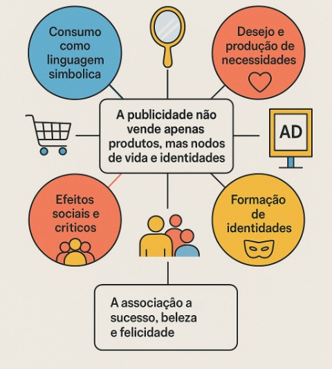

Análise crítica de discursos publicitários: consumo, desejo e identidade
A publicidade, mais do que anunciar produtos, constrói narrativas que moldam o que desejamos e quem nos tornamos. Ao associar bens a valores simbólicos — como sucesso, beleza e felicidade — ela participa ativamente da construção de identidades em contextos sociais e culturais específicos.
Consumo como linguagem simbólica
O consumo ultrapassa a simples utilidade: os bens tornam-se signos de pertencimento, distinção e status. Em termos teóricos, obras clássicas sobre consumo enfatizam que comprar é também comunicar — escolhas materiais manifestam gostos, hierarquias e estilos de vida.
Desejo e produção de necessidades
Campanhas publicitárias frequentemente produzem desejos ao invés de apenas atendê-los. Imagens e narrativas criam promessas de realização que direcionam aspirações e reconfiguram necessidades culturais. Assim, o marketing não só responde ao querer, mas o reorienta.
Associação a sucesso, beleza e felicidade
Ao relacionar produtos a ideias de sucesso, a publicidade transforma objetos em instrumentos de mobilidade simbólica. Produtos de luxo e marcas de prestígio representam status e reconhecimento. De modo análogo, a indústria da beleza padroniza ideais estéticos, usando o corpo como superfície simbólica. A promessa de felicidade aparece como vínculo entre consumo e experiências valorizadas socialmente — a compra se oferta como meio para emoções e vínculos.
Formação de identidades
Identidades são frequentemente performadas por meio de escolhas de consumo. Marcas, estilos e objetos auxiliam a construção de narrativas pessoais e coletivas: como nos vemos, como queremos ser percebidos e a quais grupos desejamos pertencer. Porém, essa construção opera dentro de repertórios simbólicos preexistentes, definidos pelo mercado e pela cultura.
Efeitos sociais e críticos
As representações idealizadas veiculadas pela publicidade podem produzir comparação social, insatisfação e a sensação de impossibilidade de adequação aos padrões. A transformação da identidade em mercadoria — quando valores, causas e traços pessoais são apropriados como recursos de venda — suscita críticas éticas e políticas. Ao mesmo tempo, há deslocamentos de resistência: consumidores reinterpretam e, por vezes, recusam identidades impostas, buscando autenticidade e pluralidade.
“O consumo é um sistema de signos que estrutura as relações sociais tanto quanto a linguagem.” — Jean Baudrillard
“A publicidade oferece aos consumidores a oportunidade de construir e comunicar identidades, mas dentro dos limites simbólicos que o mercado estabelece.” — Sengupta & De
Considerações finais
Entender a publicidade como prática simbólica é essencial para avaliar seu papel cultural. Ela não apenas vende produtos: vende modos de vida e modelos de identidade. A análise crítica busca revelar esses mecanismos, suas consequências e alternativas que promovam uma comunicação mais ética, inclusiva e consciente.
Referências
Baudrillard, J. (1995). A sociedade de consumo. Lisboa: Edições 70.
Bourdieu, P. (1984). La Distinction: Critique sociale du jugement. Paris: Les Éditions de Minuit.
Richins, M. L. (1995). Social Comparison, Advertising, and Consumer Discontent. Sage Publications.
Sengupta, A., & De, S. (2011). Advertising Fantasy: Consuming Passion – ‘Consumed’ Desire. Springer.
Bhattacharjee, A., Berger, J., & Menon, G. (2014). When Identity Marketing Backfires: Consumer Agency in Identity Expression. Journal of Consumer Research.
Gabelaia, I., & Tracy, V. (2025). Redefining Consumer Desires: A Qualitative Study on Marketing’s Role in Shaping Modern Wants through Conditional Psychology. IBIMA Publishing.
Identity-Based Consumer Behavior. (2012). International Journal of Research in Marketing.